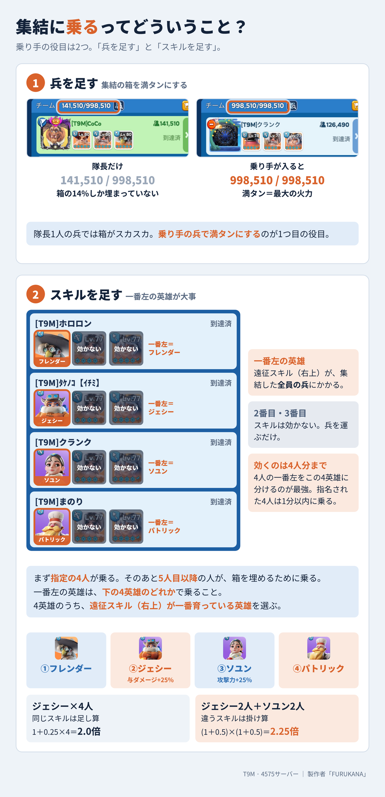

集結主はふじまる・ヨルカ・ヒデキの3人。駐屯主はふじまるで、最強の英雄で駐屯する。駐屯中に相手の集結が来たら、駐屯の差し込みで耐える。
弓1を入れるのは、相手のターンを1回増やすため。
集結主から別の指示があればそちらを優先。
相手が城を取った直後を連続集結で叩いて奪い返し、T9Mに引き渡す。集結主はイチカ・DONPEN・くるりん・tenoの4人（tenoは21:30から）。スタート時点で集結主が足りない場合は、ヨルカが111へ移る。集結主がそろったら、ヨルカはT9Mへ戻る。
| 集結主 | フレンダー | ジェシー | ソユン | パトリック |
|---|---|---|---|---|
| ふじまる（駐屯・集結） | ホロロン | ﾀｹﾉｺ | まのり | ひだり |
| ヨルカ | たもん | メグミルク | さんぺい | さくらわらびもち |
| ヒデキ | ニック | 鬼塚 | クランク | omaaaa |
| イチカ（111） | MuuuMuuu | nico | ろまね | roro |
| DONPEN（111・合流後） | °ʚ現役jkﾅｶﾖｼ°ɞ° | 無課金勢の美少女 | ポッポ | くるくる |
| くるりん（111） | boboa | ちょろりん | ぷにゃたん | とんぼ |
| teno（111・21:30から） | 固定なし（空き枠を左から順に埋めて乗る：ほたて・みさん・ななせ） | |||
ヒデキ隊の乗り手は槍を多めに送る（ヒデキの槍が4.3万と少ないため）。クランクは乗り手としてヒデキ隊のソユン（Lv5）に入る。T9Mへ移籍する新規参加の5人（YUI・mkwkk・Bigban・YHWH・とっとりとり）は、ふじまる・ヨルカ・ヒデキの集結の空き枠に乗る（左の英雄は4英雄のうち一番育っているもの。とっとりとりはジェシーLv4）。MuuuMuuuは111で唯一のフレンダーLv5なのでイチカ隊へ。くるりん・tenoが集結主のため、イチカ隊のソユン枠はろまね（英雄は未確認）。くるりん隊は元teno隊の4人、teno隊は空き枠。名簿のVC欄は確認できしだい記入。ふじまるの駐屯にも同じ4人が同じ英雄で入る。ふじまる隊に戦力・兵の上位4人を集めた。フレンダーLv5は隊長2人だけのため、Lv4のホロロン・たもんが担当。
| 名前 | 役割 | フェーズ1（21〜23時） | フェーズ2（23〜25時） |
|---|---|---|---|
| ふじまる T9M | 駐屯主（最強の英雄で駐屯）。111が城を持ったまま耐える場面では、111へ移籍して駐屯 | ペットバフ 開幕からON | そのまま駐屯主 |
| ヒデキ T9M | T9Mの集結主。兵40.8万（火晶2）、英雄Lv76〜80。槍が4.3万と少ないので、集結は40:20:40の槍を乗り手で補う | 温存 | ペットバフON |
| ヨルカ T9M | T9Mの集結主。兵76.9万（盾34.5万／槍17.2万／弓25.1万）。スタート時点で111の集結主が足りなければ111へ移り、イチカと集結。111の集結主がそろったらT9Mへ戻る | 温存 | ペットバフON |
| イチカ 111 | ゴーストの1本目。兵79.4万（盾29.3万／槍15.1万／弓35.1万）。州で一番強い | ペットバフON | 温存分があれば使う |
| DONPEN 111・途中参加 | ゴーストの集結主（104.5M・火晶2） | 温存（合流前） | ペットバフON |
| くるりん 111 | ゴーストの集結主（97.0M・火晶2） | ペットバフON | 温存分があれば使う |
| teno 111・21:30から | ゴーストの集結主（71.0M・火晶2） | 温存（合流前） | ペットバフON |
DONPENは途中参加。スタート時点で111の集結主が足りなければ、ヨルカが111へ移ってイチカと集結する。その間、ヨルカの集結に乗るのは111のメンバー。T9Mの集結はふじまる・ヒデキの2人で回す。111の集結主がそろったら、ヨルカはT9Mへ戻る。ペットバフは前半組と後半組に分け、どちらの時間帯にも誰かのバフが効いているようにする。
| 班 | 集結主・駐屯主 | 乗り手（着弾秒数） |
|---|---|---|
| ふじまる班 | ふじまる（36秒） | ホロロン・ﾀｹﾉｺ（45秒）、まのり・ひだり（47秒） |
| ヨルカ班 | ヨルカ（39秒） | たもん・メグミルク（50秒）、さんぺい・さくらわらびもち（52秒） |
| イチカ班（111） | イチカ（36〜39秒） | MuuuMuuu・roro・nico・teno（45〜50秒） |
| DONPEN班（111） | DONPEN・くるりん・teno（39〜43秒） | °ʚ現役jkﾅｶﾖｼ°ɞ°・無課金勢の美少女・ポッポ・くるくる（50〜55秒）、boboa・ちょろりん・ぷにゃたん・とんぼ（55〜58秒）、ほたて・みさん・ななせ（58秒〜） |
| 新規5人（T9Mへ移籍） | — | YUI・とっとりとり・mkwkk・Bigban・YHWH（50〜55秒） |
| ヒデキ班 | ヒデキ（43秒） | ニック・鬼塚（52秒）、クランク・omaaaa（55秒） |
| 途中参加組 | — | えび10・四駆郎（58〜66秒） |
城に接するマスは数が限られるので、T9Mと111がどの面を使うかは州の移転配置の担当と調整する。
| 名前 | 参加 | VC | 戦力 | 兵（盾/槍/弓） | 役割 |
|---|---|---|---|---|---|
| 駐屯主・集結主 | |||||
| ふじまる | 21:00 | — | 149M | 火晶3／火晶3／火晶3 | 駐屯主（フェーズ1ペットバフ） |
| ヒデキ | — | — | — | 火晶2（盾20.4万／槍4.3万／弓16.1万＝40.8万） | 集結主（フェーズ2ペットバフ）。槍が少ない |
| ヨルカ | 21:00 | — | 147M | 火晶3（盾34.5万／槍17.2万／弓25.1万＝76.9万） | 集結主・駐屯回し（フェーズ2ペットバフ） |
| 固定の乗り手（集結即乗り・駐屯） | |||||
| クランク | 21:00 | — | 69.3M | 火晶1（盾21.9万／槍17.2万／弓19.1万＝58.2万） | ヒデキ隊ソユン |
| まのり | 21:00 | — | 67.4M | —／火晶1／— | ふじまる隊ソユン |
| ホロロン | 21:00 | — | 67.2M | 火晶2／火晶1／火晶1 | ふじまる隊フレンダー |
| ﾀｹﾉｺ【ｲﾁﾐ】 | 21:00 | — | 66.7M | —／火晶1／火晶1 | ふじまる隊ジェシー |
| たもん | 21:00 | — | 64.7M | —／火晶1／— | ヨルカ隊フレンダー |
| メグミルク | 21:00 | — | 63.0M | —／火晶1／— | ヨルカ隊ジェシー |
| さんぺい | 21:00 | — | 51.2M | T10以下 | ヨルカ隊ソユン |
| さくらわらびもち | 21:00 | — | 39.3M | T10以下 | ヨルカ隊パトリック |
| 駐屯の補充・空き枠の乗り手（合流したら駐屯へ） | |||||
| 鬼塚権左衛門 | 途中 | — | 57.1M | T10以下 | ヒデキ隊ジェシー |
| ニック | 途中 | — | 55.8M | T10以下 | ヒデキ隊フレンダー |
| omaaaa | 途中 | — | 45.1M | T10以下 | ヒデキ隊パトリック |
| えび10 | 途中 | — | 41.3M | T10以下 | 駐屯の補充・空き枠 |
| 四駆郎 | 途中 | — | 38.8M | T10以下 | 駐屯の補充・空き枠 |
| いとち | 途中 | — | 60.2M | T10以下 | 空き枠・駐屯の補充 |
| ひだり | 21:00 | — | 38.6M | T10以下 | ふじまる隊パトリック |
| 新規参加（T9Mへ移籍） | |||||
| YUI | — | — | 79.2M | — | 空き枠（GOT・炉火晶1） |
| mkwkk | — | — | 56.2M | — | 空き枠（GOT・炉Lv30） |
| Bigban | — | — | 49.9M | — | 空き枠（ebF・炉Lv29） |
| YHWH | — | — | 47.5M | — | 空き枠（GOT・炉Lv29） |
| とっとりとり | — | — | 42.2M | — | 空き枠（ebF・炉Lv29） |
| 111 集結主 | |||||
| イチカ | 21:00 | — | 130M | 火晶3（盾29.3万／槍15.1万／弓35.1万＝79.4万） | 集結主（フェーズ1ペットバフ） |
| DONPEN | 途中 | — | 104.5M | 火晶2／火晶1／— | 集結主（フェーズ2ペットバフ） |
| くるりん | 21:00 | — | 97.0M | 火晶1／火晶1／— | 集結主（フェーズ1ペットバフ） |
| teno | 21:30 | — | 71.0M | 火晶2 | 集結主（フェーズ2ペットバフ） |
| 111 固定の乗り手 | |||||
| MuuuMuuu | 21:00 | — | 72.1M | 火晶1／火晶1／火晶1 | イチカ隊フレンダー |
| ろまね | — | — | 93.4M | 火晶2 | イチカ隊ソユン |
| roro | 21:00 | — | 69.3M | T10以下 | イチカ隊パトリック |
| nico | 21:00 | — | 66.0M | —／火晶1／— | イチカ隊ジェシー |
| boboa | 21:00 | — | 62.8M | —／火晶1／— | くるりん隊フレンダー |
| ちょろりん | 21:00 | — | 60.0M | T10以下 | くるりん隊ジェシー |
| ぷにゃたん | 21:00 | — | 53.2M | T10以下 | くるりん隊ソユン |
| ポッポ | 途中 | — | 63.8M | 火晶1／火晶1／火晶1 | DONPEN隊ソユン |
| くるくる | 途中 | — | 57.8M | T10以下 | DONPEN隊パトリック |
| 無課金勢の美少女 | 途中 | — | 57.6M | —／火晶1／— | DONPEN隊ジェシー |
| °ʚ現役jkﾅｶﾖｼ°ɞ° | 21:00 | — | 49.2M | T10以下 | DONPEN隊フレンダー |
| 111 空き枠の乗り手・駐屯の補充 | |||||
| とんぼ | 21:00 | — | 47.3M | T10以下 | くるりん隊パトリック |
| ほたて | 途中 | — | 46.5M | T10以下 | teno隊・空き枠 |
| みさん | 途中 | — | 45.0M | T10以下 | teno隊・空き枠 |
| ななせ | 21:00 | — | 41.1M | T10以下 | teno隊・空き枠 |
| 役割 | 担当 | やること |
|---|---|---|
| 全体指示 | ひだり | VCで全体の動きを指示する |
| 111との連携指示 | ひだり | 111への集結・帰還・引き渡しの指示 |
| カウント役 | 鬼塚権左衛門 | 差し込みの70秒前からの読み上げ |
| 駐屯回し | ヨルカ | 駐屯の入れ替えと補充を回す |
| 事前偵察 | さんぺい・まのり | 相手の集結の秒数（行軍時間・着弾時刻）を事前に確認して知らせる |
| 同盟チャット書き込み | さんぺい・まのり | Discordに入っていないメンバーのために、VCの指示を同盟チャットへ書き込む |
日本時間 21:00〜23:00
開幕のスタートダッシュ。集結主のペットバフは前半組が使う。
日本時間 23:00〜25:00
前半組のペットバフが切れるので、温存していた後半組が使う。最後の1時間は全員で城を守る。
王城戦に参加しない人は必ずシールド！！
11:00 UTC（日本20:00） 王城戦の参加者は整列開始11:30 UTC（日本20:30）には整列を済ませる。ログインして治療し、乗る英雄と比率を確認しておく。
相手がわざと兵を抜いて、先に当たる集結主を城に入れてくることがある。兵が抜ける兆候が見えたら、その集結は到着前に行軍を戻す。
全員で城を守る。15:30 UTC（日本24:30）までに駐屯を満杯に。
乗り手が足りないときは、1本目の集結に乗った人が2本目にも乗る。そのぶん集結と集結の間隔を少し空ける。
| 加速前の残り | 加速後 | メモ |
|---|---|---|
| 残り20秒 | 15秒 | |
| 残り16秒 | 12秒 | |
| 残り12秒 | 9秒 | |
| 残り8秒 | 6秒 | |
| 残り4秒 | 3秒 | 口頭のカウントは1秒ほど遅れるので、このあたりが調整ポイント |
| 残り3秒 | 2.25秒 | |
| 残り2秒 | 1.5秒 | |
| 残り1秒 | 0.75秒 | 同時処理される可能性が高い範囲。ダイヤ加速 |
残り1カウントになったら同時処理されるので、ためらわず加速する。
| 城からの距離 | 着弾までの秒数 | 使い方 |
|---|---|---|
| 城に接する列 | 36・39・43 | 駐屯主・集結主 |
| 2列目 | 45・47・50 | 固定の乗り手 |
| 3列目 | 52・55・58 | 差し込み・空き枠の乗り手 |
| 4列目 | 58・66 | 差し込みはこの距離まで |
城の四方とも同じ並び。辺の中央寄りが36秒で一番近く、角に近いマスは43秒。
主力はVOV。偵察役がVOVの集結の発射と着弾時刻をすぐチャットに流し、T9Mの差し込みと111の集結の基準にする。
左の英雄は、下の英雄のうち右上（遠征スキル）のレベルが一番高いお気に入り。
ヨルカ・ふじまる・ヒデキは60:39:1、一般の乗り手は60:40:0。
左の英雄は、下の英雄のうち右上のレベルが一番高いお気に入り。
5秒以内に集結画面に移れるよう、必ず部隊登録しておく。差し込みは、カウント役が相手の着弾70秒前から読み上げる数字が自分の行軍秒数になったら押す。
戦闘用のペットバフは温存し、合図が出たら入れる（4575にはまだ雪猿がいないので、今いるペットで）。出征容量アップがあれば使う。戦わない時間はシールド、負傷兵はこまめに治療し、病院がいっぱいになる前に下がる。
